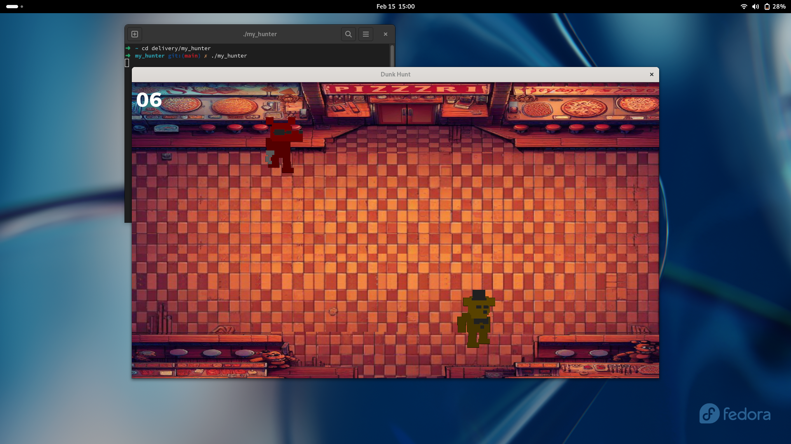
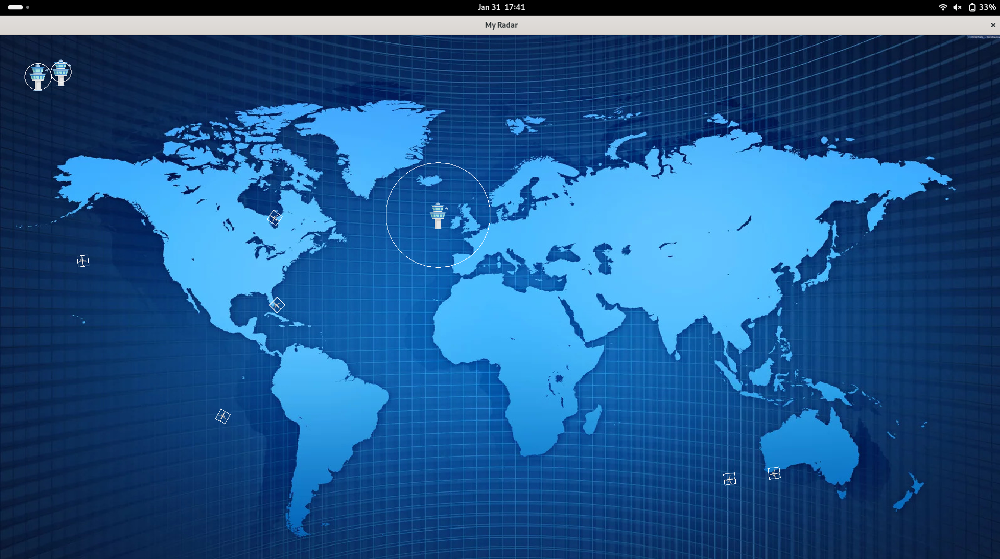
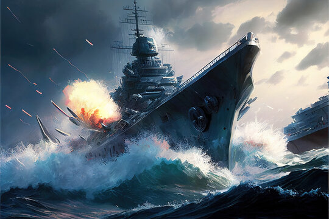
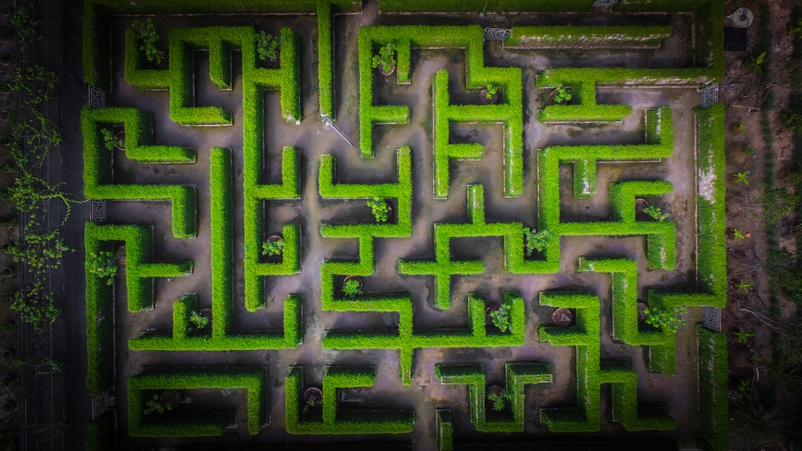
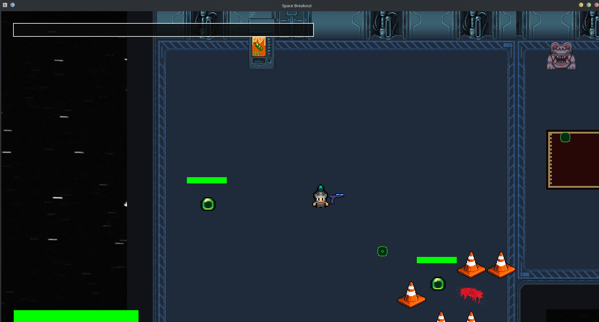
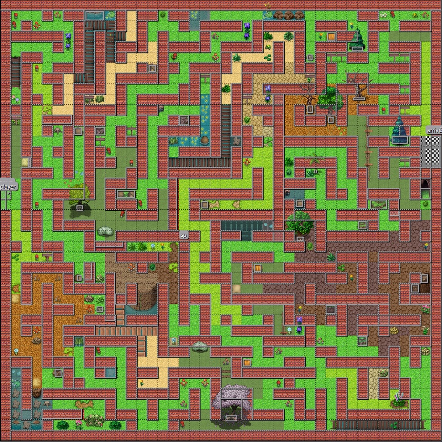
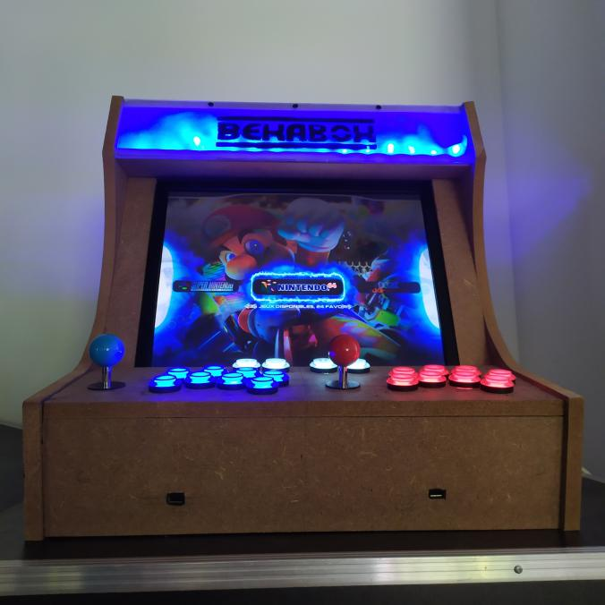

Noa SMOTER
Portfolio
Recherche de stage
Étudiant Epitech Promo 2028
About me :
Hey !
Je suis un étudiant en seconde année à Epitech de 17 ans.
Je suis à la recherche d'un stage de deuxième année d'une durée de 4 à 6 mois à partir de juillet, dans le domaine du développement informatique.
Ayant toujours été curieux des technologies nous entourant, je suis naturellement tombé dans le milieu de l'informatique au collège. J'ai d'abord commencé avec l'ambition de réaliser mes premiers sites web,
puis rapidement les premiers langages de programmation ont réussi à me séduire. J'ai alors réalisé mes premiers projets en python, beaucoup de petits jeux.
Je suis un passionné, doté d'un esprit créatif et d'une grande assiduité, prêt à m'immerger dans divers domaines grâce aux méthodes pédagogiques acquises à Epitech.
Mon énergie et ma persévérance naturelles me permettent d'assimiler de nouvelles technologies avec aisance.
Vous pouvez retrouver mes projets ci-dessous,
Et mon CV ici.
My Projects
Sokoban

Description :
Re-création du jeu Sokoban en C dans le terminal à l'aide de la librairie ncurses.
Langage utilisé :
Duck Hunt
Description :
Re-création d'un jeu type Duck Hunt dans l'univers de Five Night At Feddy's en C grâce à la librairie CSFML.
Langage utilisé :
My Radar
Description :
Simulateur de trafic aérien 2D en C à partir d'une map passée en paramètre. Projet graphique réalisé avec la lib CSFML.
Langage utilisé :
My Navy
Description :
Battaille navale entre deux interfaces de ligne de commande réalisé en C.
Langage utilisé :
a-maze-d
Description :
Réalisation d'un algrotithme permettant de trouver la façon la plus rapide de faire parvenir n robots d'un point A à un point B dans un labyrinthe en C
Langages utilisés :
My RPG
Description :
Réalisation d'un jeu style rpg 2D par groupe de 4, en C à partir de la librairie CSFML. Système de combat shooter et style graphique retro gaming.
Langages utilisés :
Mini-Projets Python / Web
Description :
De nombreux petits projets et jeux réalisés en python, comme un labyrinthe, la recréation d'un jeu Bomberman, un morpion contre bot,... Et web avec un ENT type Pronote.
Langages utilisés :
Borne D'arcade
Description :
Réalisation d'une borne d'arcade avec une refonte de RecalBox sur Raspberry Pi.